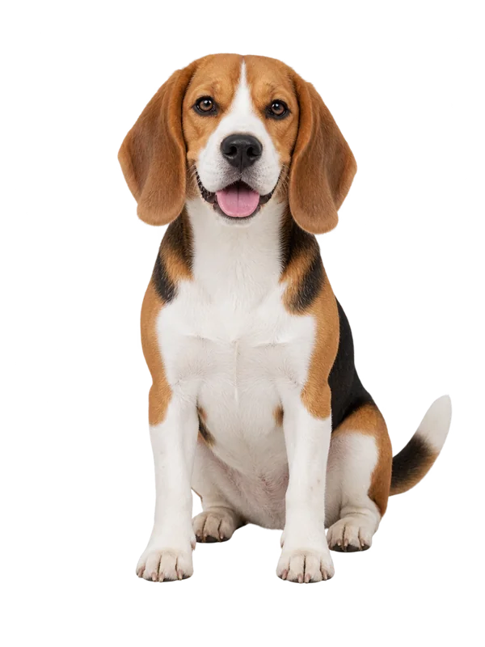
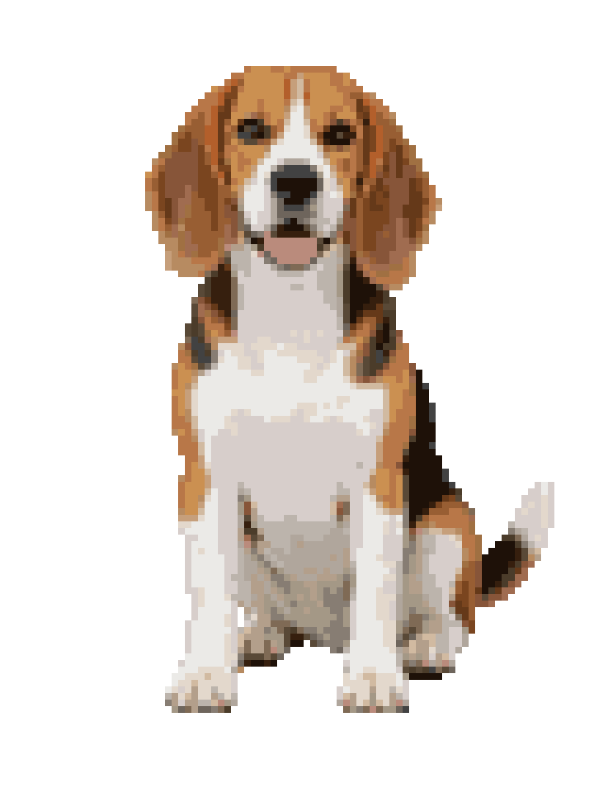

PetCrossStitch
A favorite face. One stitch at a time.
Turn a pet photo into a printable cross-stitch pattern. Compare three detail levels, find matching DMC threads, and bring a familiar face to life by hand.
Try PetCrossStitchThe image above is an actual generated example.